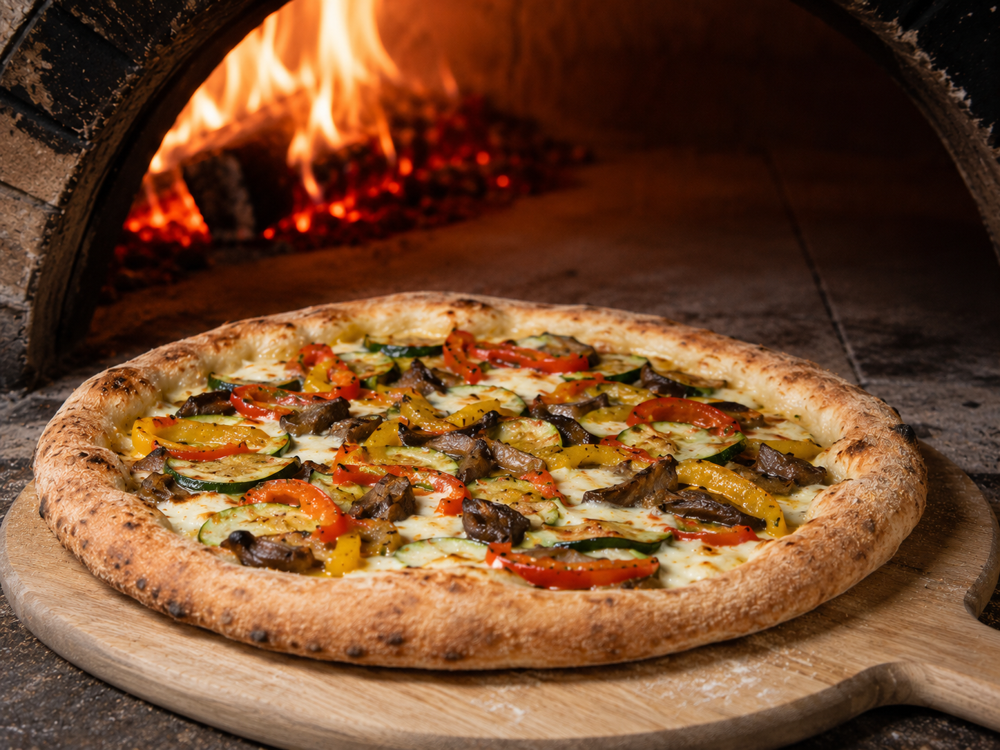
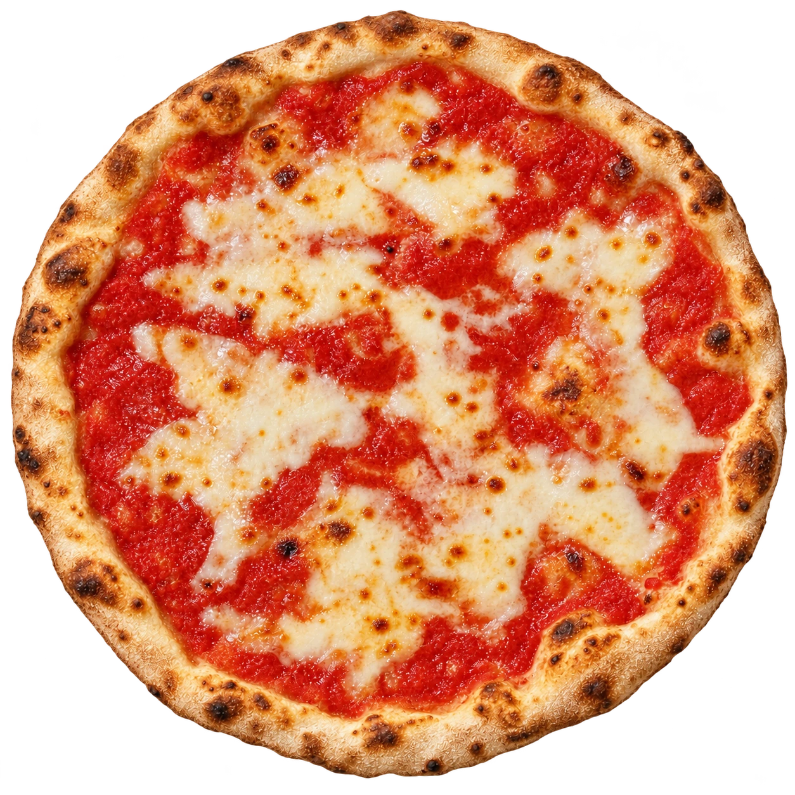

Da vent'anni, il sapore di qualcosa di vero.
Tutto ha inizio nel 2006, da una semplice ma ambiziosa idea di Franco: portare nel Capo di Leuca l'asporto di qualità. Da allora, il nostro obiettivo è rimasto uno solo: offrirvi una pizza tradizionale unica e inconfondibile. Ecco come lo facciamo:
Selezioniamo solo materie prime autentiche, fresche e rigorosamente italiane.
L'artigianalità al primo posto. Il nostro forno arde con profumato legno di ulivo, regalando alla pizza quel sapore inconfondibile.
Una ricetta segreta che custodiamo gelosamente: un blend di 4 farine diverse e una lenta lievitazione di 48 ore per la massima digeribilità.
pomodoro, origano, aglio
pomodoro, fior di latte, basilico, olive
funghi freschi, pomodoro, fior di latte
würstel, pomodoro, fior di latte
pomodorini freschi, rucola, pomodoro, fior di latte
mozzarella di bufala, olive, pomodoro
patate fritte, pomodoro, fior di latte
salsiccia fresca, pomodoro, fior di latte
acciughe, origano, capperi, olive nere, pomodoro, fior di latte
salamino piccante, pomodoro, fior di latte
prosciutto cotto, olive, pomodoro, fior di latte
peperoni, melanzane e zucchine grigliate, pomodoro, fior di latte
prosciutto cotto, funghi freschi, olive, pomodoro, fior di latte
tonno, cipolla di Tropea, pomodoro, fior di latte
salamino piccante, funghi, pomodoro, fior di latte
fior di latte, fontina, provola, gorgonzola, pomodoro
würstel, patate fritte, pomodoro, fior di latte
prosciutto cotto, funghi, carciofini, olive, pomodoro, fior di latte
prosciutto crudo, grana, rucola, pomodoro, fior di latte
carciofini, peperoni, salamino piccante, capperi, olive, pomodoro, fior di latte
pomodorini freschi, prosciutto crudo, grana, rucola, fior di latte
mozzarella di bufala, pomodorini freschi
nduja calabrese, cipolla di Tropea, origano, pomodoro, fior di latte
nduja calabrese, ricotta fresca, pomodoro, fior di latte
guanciale di maiale, provola, pomodoro, fior di latte
salamino piccante, gorgonzola, peperoncino, pomodoro, fior di latte
speck, scamorza affumicata, pomodoro, fior di latte
salsiccia fresca, funghi, pomodoro, fior di latte
ricotta fresca, grana, rucola, pomodorini freschi, noci, fior di latte
peperoni grigliati, salsiccia fresca, pomodoro, fior di latte
salsiccia fresca, patate fritte, pomodoro, fior di latte
provola affumicata, pancetta fumè, rucola, pomodoro, fior di latte
salamino piccante, patate fritte, pomodoro, fior di latte
nduja calabrese, peperoni, salamino piccante, peperoncino, pomodoro, fior di latte
bacon, cipolla, patate fritte, pomodoro, fior di latte
rape saltate, salsiccia fresca, fior di latte
funghi porcini, salsiccia fresca, grana, pomodoro, fior di latte
bresaola, rucola, grana, pomodoro, fior di latte
speck, mozzarella di bufala, grana, rucola, pomodorini freschi
funghi porcini, gorgonzola, provola, fior di latte
prosciutto crudo, grana, rucola, maionese, pomodorini freschi, fior di latte
tonno, pomodorini freschi, rucola, maionese, insalata, fior di latte
salamino piccante, insalata, maionese, pomodorini freschi, fior di latte
patate fritte, cipolla, kebab, insalata, rucola, maionese, ketchup
€ 5,00 Porzione - € 17,00 Kg.
• Calzoncini • Chele di Granchio
• Crocchette di patate • Olive ascolane • Arancini di Riso

Scegli una pizza del menu o crea la tua combinazione di ingredienti.
Componi la tua pizzaDeve essere buona per tutti. Prepariamo su richiesta opzioni dedicate, basta dircelo al momento dell'ordine.